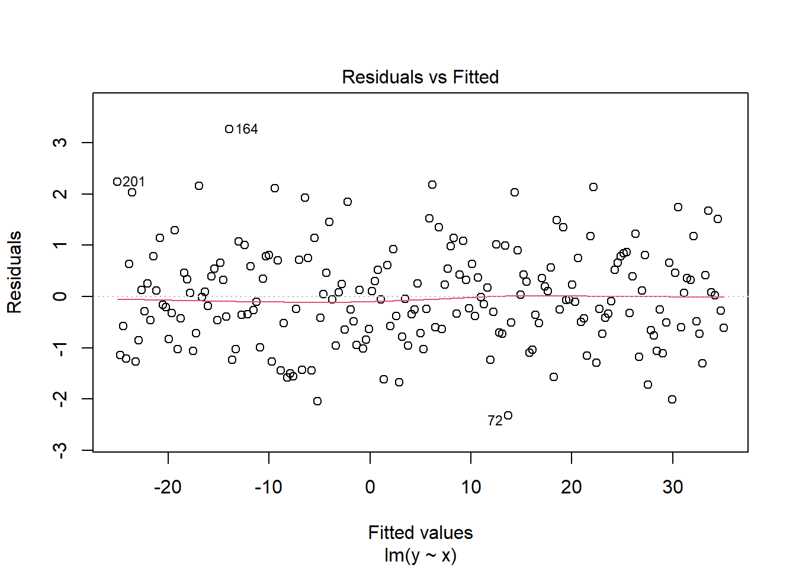
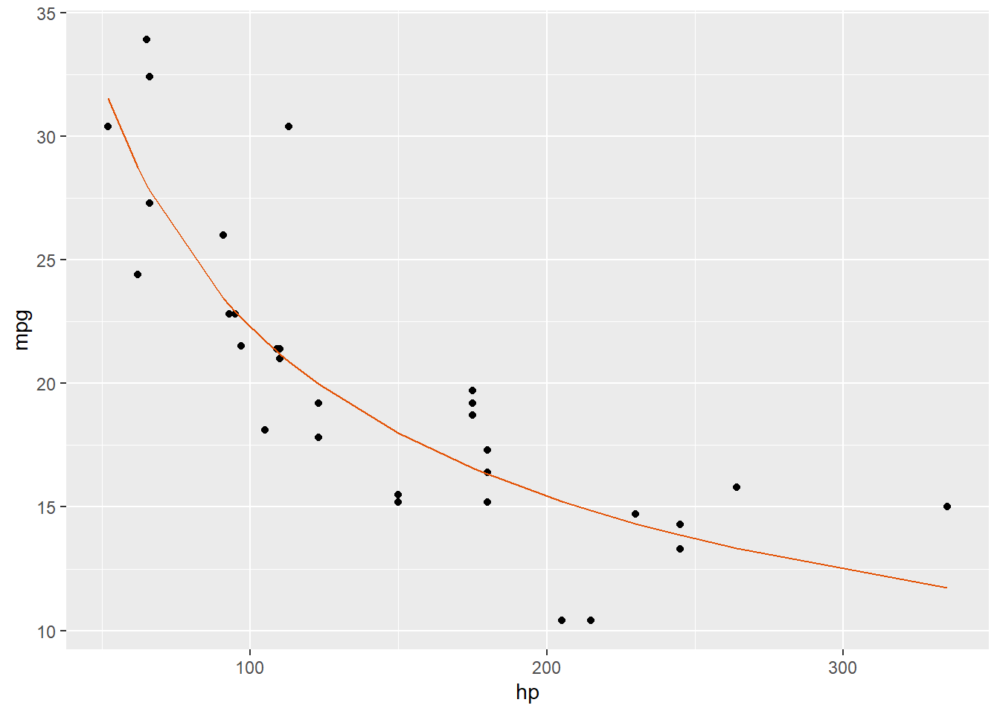
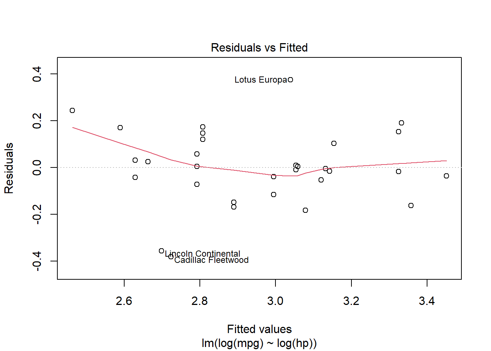
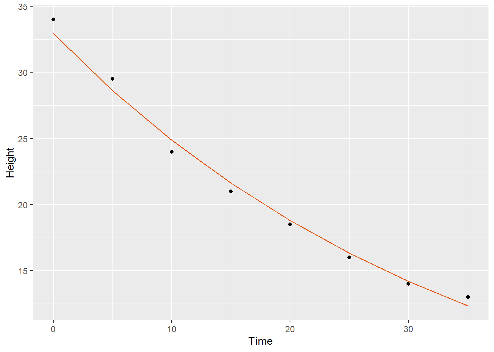
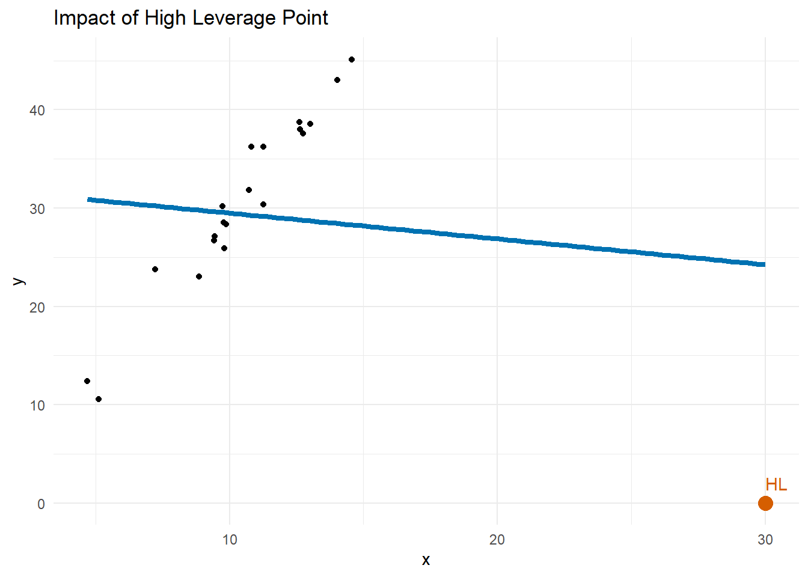
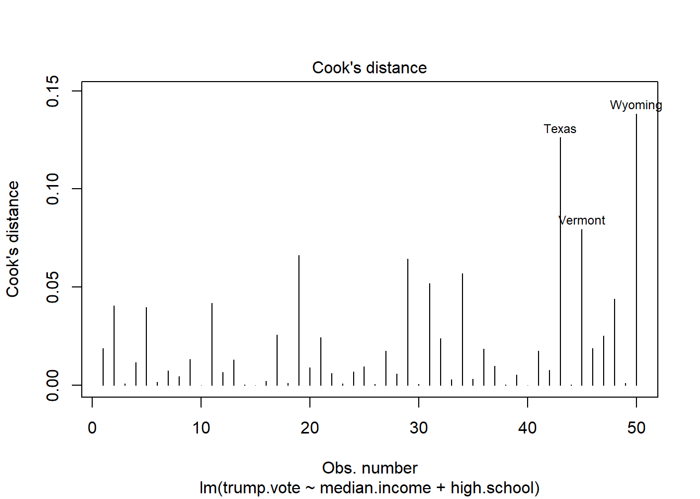
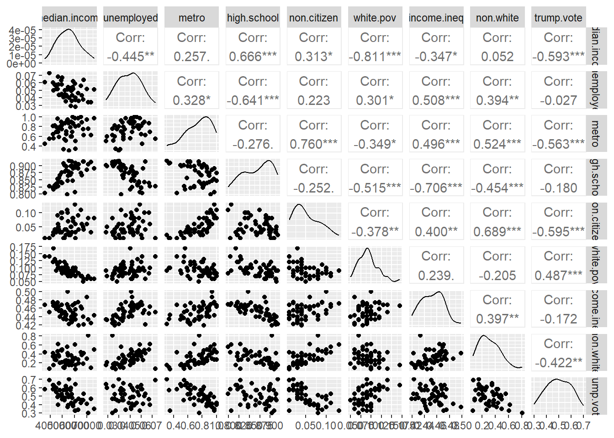

You’ve fit a nice multiple regression model to some data and gotten a decent \(R^2\). You adeptly incorporated qualitative predictors and interactions, maybe even looked at some polynomial terms. Now you can submit your report and move onto the next thing, right?
Well, of course the fact that there is a whole section of notes below suggests not. There are still some common issues you should check for which may impact the predictive power of your model. These include
Non-linearity
Heteroscedasticity
Outliers and high leverage points
Collinearity
We’ll touch upon all four in these notes starting with an important tool called residual plots that allows us to identify the first two issues above. We’ll continue to use the mtcars, election2016, and advertising datasets.
Residual Plots and Data Transformations
Residuals are defined as the individual errors \[
e_i = y_i- \hat{y}_i
\] They represent “what’s left over” after accounting for the trend you think you have identified. Most techniques for identifying issues with SLM or other regression models (a broad topic referred to as regression diagnostics) involve looking at the distribution of residuals to identify problems.
If the relationship between \(y\) and \(x\) truly is linear and we plot the residuals \(e_i = y_i - \hat{y}_i\) against \(x_i\) or the predicted values \(\hat{y}_i\), then there should be no systematic pattern in how the residuals depend on \(x\). If there is, it may be evidence of a nonlinear relationship.
To see why, suppose that I generate some fake data according to a quadratic model
library(tidyverse)
Warning: package 'purrr' was built under R version 4.5.3
── Attaching core tidyverse packages ──────────────────────── tidyverse 2.0.0 ──
✔ dplyr 1.1.4 ✔ readr 2.1.5
✔ forcats 1.0.0 ✔ stringr 1.5.1
✔ ggplot2 3.5.2 ✔ tibble 3.3.0
✔ lubridate 1.9.4 ✔ tidyr 1.3.1
✔ purrr 1.2.2
── Conflicts ────────────────────────────────────────── tidyverse_conflicts() ──
✖ dplyr::filter() masks stats::filter()
✖ dplyr::lag() masks stats::lag()
ℹ Use the conflicted package (<http://conflicted.r-lib.org/>) to force all conflicts to become errors
Notice how there is a pattern to where we over and under estimate \(y\): when \(\hat{y}\) is small or large, we underestimate and when \(\hat{y}\) is in the middle, we overestimate. If calculate and plot the residuals vs fitted values, we will see this pattern show up as a giant “U”:
Now that we’ve looked at this for fake data, let’s return to the mtcars dataset from the end of 2.2 where we observed a nonlinear relationship between mpg and hp. First note that we can shortcut some of the work above using R’s built in plot(fit,which=1) function. For example, in the last fake dataset, we could do
plot(fake_lm,which=1)

applying this to our mtcars model:
fit_lm=lm(mpg~hp,mtcars)plot(fit_lm,which=1)
Notice the U shape suggestive of a non-linear relationship. There is also a slight fan or bullhorn shape which could be indicative of something called heteroscedasticity (non-constant variance across values of the predictors). Although heteroscedasticity is arguably the coolest word in statistics, it’s not as critical as nonlinearity for prediction purposes. We won’t have time to discuss the full fix which is weighted least squares, but as we will see shortly, log transformations, a tool we’ll use to address nonlinearity, can sometimes help with this issue as well.
In the last notes, we discussed one way of addressing nonlinearity via polynomial regression. Unfortunately, the residual plot still shows evidence of a U shape when adjusting for a quadratic term.
We could add additional polynomial terms, but a more common choice if quadratics fail is to perform log-transformations of your data. To see if this is reasonable in our present example, we’ll start by looking at a log-log plot of mpg vs hp:
Call:
lm(formula = log(mpg) ~ log(hp), data = mtcars)
Residuals:
Min 1Q Median 3Q Max
-0.38189 -0.05707 -0.00691 0.10815 0.37501
Coefficients:
Estimate Std. Error t value Pr(>|t|)
(Intercept) 5.54538 0.29913 18.538 < 2e-16 ***
log(hp) -0.53009 0.06099 -8.691 1.08e-09 ***
---
Signif. codes: 0 '***' 0.001 '**' 0.01 '*' 0.05 '.' 0.1 ' ' 1
Residual standard error: 0.1614 on 30 degrees of freedom
Multiple R-squared: 0.7157, Adjusted R-squared: 0.7062
F-statistic: 75.53 on 1 and 30 DF, p-value: 1.08e-09
That seems promising, with an \(R^2\) value close to the quadratic model and one less parameter! You can visualize the fit alongside the original data by “undoing1” the logarithm and taking exp(fitted values):
mtcars |>ggplot(aes(x=hp,y=mpg))+geom_point()+geom_line(aes(y =exp(fitted(fit_lm_log))), color ="#e35205")

That seems to make a lot more sense! Here is what the residual plot looks like as well (note: here we use transformed values)
plot(fit_lm_log,which=1)

This plot definitely has less of a U-shape and fan shape so yay for transformations!
An additional type of transformation that helps with exponential data2 is to take log of only the \(y\) values (called a semi-log transformation). As an example, consider the Firestone Propagator dataset which has information on the height of foam (mm) as a function of time since pour (s):
Call:
lm(formula = log(Height) ~ Time, data = firestone)
Residuals:
Min 1Q Median 3Q Max
-0.03612 -0.02242 -0.01434 0.03012 0.05314
Coefficients:
Estimate Std. Error t value Pr(>|t|)
(Intercept) 3.495115 0.023066 151.53 5.57e-12 ***
Time -0.028094 0.001103 -25.48 2.41e-07 ***
---
Signif. codes: 0 '***' 0.001 '**' 0.01 '*' 0.05 '.' 0.1 ' ' 1
Residual standard error: 0.03573 on 6 degrees of freedom
Multiple R-squared: 0.9908, Adjusted R-squared: 0.9893
F-statistic: 649.1 on 1 and 6 DF, p-value: 2.41e-07
and good looking picture:
firestone |>ggplot(aes(x=Time,y=Height))+geom_point()+geom_line(aes(y =exp(fitted(fit_lm_semi))), color ="#e35205")

To summarize this section:
Residual plots help identify issues with nonlinearity (U-shaped patterns) and heteroscedasticity (fan shaped patterns)
If your data looks nonlinear, log-log or semi-log plots can help identify a better model.
We could say more, but you’ll probably lose interest so we’ll leave it there and move on.
The Punk and Metal Kids
At the end of Section 2.1, we noted that added variable plots mark “unusual observations”, Dealing with these is one of the biggest grey areas in statistics. This is made trickier by the fact that there are typically two different types of unusual values one should look at: - outliers, which are points with unusually high residuals, and - high-leverage points, which are those with unusual \(x\)-values. I think of outliers like the punks (they just refuse to follow the trend) and high leverage points as the metal kids (they just stand out in the crowd). Both outliers and high-leverage points can have dramatic effects on your model accuracy although an outlier might not affect your fitted line much if it occurs near \(\bar x\), while a high leverage point can dramatically pull the line toward itself even if it isn’t technically an outlier.
To address the outlier punks first, there are no hard and fast methods for dealing with them. Outliers are usually defined as points with high residuals. That’s why they are punk rock; they don’t conform to the standards. Sometimes you can pick them out immediately by plotting the data, but another common method is to look at the distribution of standardized residuals.
Standardized residuals are the regular residuals converted to z-scores. Assuming the residuals look roughly unbiased from our residual plots, they should have mean 0 so we can covert to z-scores if we divide by their standard deviation. The common method for estimated the standard deviation of residuals is called the Residual Standard Error (RSE): \[
RSE = \sqrt{SSE/(n-2)}
\] It’s basically the RMSE, but we divide by \(n-2\) because of the “degrees of freedom3”
Standardized residuals are easier to use for outlier identification because they do not depend on units of measurement so one can say any observation with a standardized residual greater than 2 or 3 in absolute value is worth investigating. R will compute them automatically using the rstandard function.
To illustrate, let’s look at the model for trump.vote which uses only the two predictors median.income and high.school (spoiler alert: those are the two significant ones from the Section 2.1 practice problems):
There are two states with unusually high residuals (greater than 2) and one with an unusually low residual. We can identify which states they are as follows:
state stres
North Dakota North Dakota 2.094700
Vermont Vermont -2.134484
Wyoming Wyoming 2.064398
The following graphs show them in the added-variable plots (although note that there is no guarantee that points with high overall standardized residual will stand out in these projections):
library(car)
Loading required package: carData
Attaching package: 'car'
The following object is masked from 'package:dplyr':
recode
The following object is masked from 'package:purrr':
some
Notice also that there are other points which stand out, namely the two state with unusually high median income and the two points with unusually low high school graduation rates. These are the metal kids or high leverage points. There are two answers to what we mean by this term: the easy one and the rigorous one. If you haven’t taken linear algebra, you can opt for the easy described below. If you have taken linear algebra, you can read the supplement for the rigorous one.
To demonstrate the presence of a high leverage point, suppose we generate 20 points with \(x\) values near 10 according to the model \(Y= 3X +\varepsilon\) but then add one point at \((30,0)\)
set.seed(42)x =rnorm(20, mean =10, sd =2)y =3* x +rnorm(20, mean =0, sd =2)# Add a high leverage pointx_high_leverage =30y_high_leverage =0# Combine datadf =data.frame(x=c(x, x_high_leverage), y =c(y, y_high_leverage))# Fit and plot the regression modelmodel =lm(y ~ x, data = df)df |>ggplot(aes(x = x, y = y)) +geom_point() +geom_smooth(method ="lm", formula = y~x,color ="#0072B2", linewidth =1.5, se =FALSE) +geom_point(data =data.frame(x = x_high_leverage, y = y_high_leverage), aes(x = x, y = y), color ="#D55E00", size =4) +geom_text(data =data.frame(x = x_high_leverage, y = y_high_leverage),aes(x = x, y = y, label ="HL"), color ="#D55E00", vjust =-1, hjust =0) +labs(title ="Impact of High Leverage Point", x ="x", y ="y") +theme_minimal()

Notice how much that extra point impacted the estimated slope of our least squares line! It had a huge impact on that shit. Points that have an unusually larger effect on the slope of a fitted linear model are called high leverage points.
For a simple linear model, high leverage points are observations with unusually large or small \(x\) values. If we have additional variables, they are the points with unusually large or small predicted values. For example, if we look at all the \(\hat{y}\) values from our election model, we can see that one was particularly small
median.income high.school
Min. :35521 Min. :0.7990
1st Qu.:48359 1st Qu.:0.8397
Median :54613 Median :0.8750
Mean :54963 Mean :0.8691
3rd Qu.:60653 3rd Qu.:0.8980
Max. :76165 Max. :0.9180
we can see that Maryland had the highest median income of all states. Let’s look at its impact on the slope of median income
fit_lm_noMD=lm(trump.vote~median.income + high.school,data=dplyr::filter(election2016,yhat>0.35))cat('slope with MD:', coef(fit_lm)[2],'\nslope without MD:', coef(fit_lm_noMD)[2])
slope with MD: -9.395787e-06
slope without MD: -9.641825e-06
The slope didn’t change too much, even relative to the already small values so we probably don’t need to worry too much about this point.
A more precise method for identifying leverage is through the hat function
h=hatvalues(fit_lm)head(sort(h,decreasing=TRUE))
California Maryland Texas Mississippi New Hampshire
0.21082190 0.16305809 0.16060520 0.12105871 0.10376346
Montana
0.09683133
Here we can see that CA and TX joing MD as points with unusually large influence.
We have only scratched the surface of influential points here. More sophisticated measures of influence like Cook’s distance (available via cooks.distance() in R) combine information about both outliers and leverage into a single measure and are worth looking into for serious regression analyses. Here’s a simple visualization you can use to identify influential points via this metric:
plot(fit_lm, which =4)

Collinearity
Recall that one interpretation of the coefficients in a multiple regression model is as the effect of each variable on the outcome after the influence of the other variables has been removed. Because of this, if two predictors are highly correlated with each other (or multiple predictors are highly correlated), the coefficients may be unstable or have large standard errors causing the model to inaccurately predict future observations.
The presence of highly correlated predictors is called collinearity4 (or sometimes multi-collinearity). TO get some visual ideas about the relationships between your predictors, GGally continues the useful ggpairs function to produce pairwise scatterplots and calculate the corresponding correlations between variables.
library(GGally)ggpairs(election2016[,2:10])

Some of the pairs have relatively high correlations (for ex, -0.811 between median.income and white.pov) which means they may contain redundant information in the data. We probably don’t need to include both in a multiple regression model! We’ll return to this idea in Module 5 when we discuss Principal Component Analysis.
Pairwise correlations might help recognized collinearity between pairs of observations, but not multi-collinearity where one predictor may depend on a linear combination of the others. Variance Inflation Factors (VIF) are a way of quantifying the degree to which such relationships are present. They are calculated in the following way: - For each predictor \(x_j\), we fit a regression of \(x_j\) on the remaining \(p-1\) predictors called the \(R^2\) value from this fit \(R_j^2\) - We then calculate the VIF for predictor \(j\) as \[
VIF_j = \frac{1}{1-R_j^2}.
\] If \(x_j\) is uncorrelated with the other predictors, then \(R_j = 0\) and \(VIF_j = 1\) whereas if \(x_j\) is heavily correlated with the other predictors, \(R_j \approx 1\) and \(VIF_j\) will be large.
You can calculate the VIFs with the car package. Let’s demonstrate on the full election model
Rule of thumb is that if you have multiple variables with VIF > 5, you may want to look into removing one and try refitting the model. High school grad rate meets this criteria but its the only one and its just over the threshold so probably not much to worry about here. Also note that if we look at the VIF for our reduced model, they are small:
vif(fit_lm)
median.income high.school
1.795836 1.795836
So we can use the reduced model with confidence!
What’s next?
In the first two Modules we have dealt exclusively with scenarios where the outcome we wish to predict is numeric. These are referred to as regression problems in the machine learning world. The next module will introduce classification problems where our outcome involves qualitative/categorical values. Then in Module 4 we’ll return to address some of the issues discussed above, including better methods for variable selection and handling collinearity.
Practice
Load the advertising dataset for use in these problems.
Refit the model for sales with TV and radio as predictors and create a residual plot of the result. Are there any noticeable patterns?
Update the model to include the interaction between TV and radio and redo the residual plot. Does it look any better?
Create a histogram of the standardized residuals. Are there any noticeable outliers (use standardized residuals greater than 3 in absolute value as the cutoff)?
Remove the outliers from 3 and refit the interaction model. Compare \(R^2\) values for the models with and without outliers.
Determine if there are any high leverage points using hatvalues(). How many points are there with leverages \(>0.04\)? (This is based on a commonly used cutoff of \(2(p+1)/n\) where \(p\) is the number of coefficients being estimated and \(n\) is the sample size. Here \(p=3\) and \(n=200\).)
Calculate VIFs for your model with interactions (Note that the VIF for the TV:radio interaction will be high since it is an engineered feature. You can set type="predictor" to instead look at the generalized variance inflation factors (GVIF), but that’s a whole other topic).
Based on your diagnostics, do you feel confident in the predictions from this model? What concerns if any remain?
Footnotes
Specifically, if \[
\log \hat y = a + b \log x
\] then \[
\hat y = \exp(a + b \log x) = e^a x^b
\] is actually a power function and the coefficient \(b\) from the regression is its exponent↩︎
Although one can also use nonlinear regression to fit exponential models to data with better outcomes, but that goes beyond the scope of these notes.↩︎
Ugh, too many asides. I envy authors of fantasy epics who will just throw out mystery terms and not explain them until four books and 5000 pages later. Basically, degrees of freedom is the sample size minus the number of parameters estimated from the data. For SLM, that’s two (slope and intercept).↩︎
In linear algebra lingo, this just means the columns of \(X\) are linearly dependent.↩︎